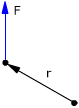
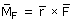

Momento de una fuerza
 |
Se define momento de una fuerza, con respecto a un punto, (Origen de momentos) como el producto vectorial:  |
Módulo
MF = r ·F· sen φ
| r: |
Módulo del vector de posición (Va del origen de momentos al punto de aplicación de la fuerza |
F: |
Módulo de la fuerza |
| φ: |
Ángulo que forman vector de posición y fuerza |
Dirección
Perpendicular al plano que determinan r y F
Sentido
El de avance de un sacacorchos que gire por
el camino más corto del vector de posición al vector
fuerza.
En lugar de dar el signo para especificar el sentido
del momento se puede dar el sentido de giro del sacacorchos
Sentido igual al de las agujas del reloj (-) |
|
Sentido contrario al de las agujas del reloj (+) |